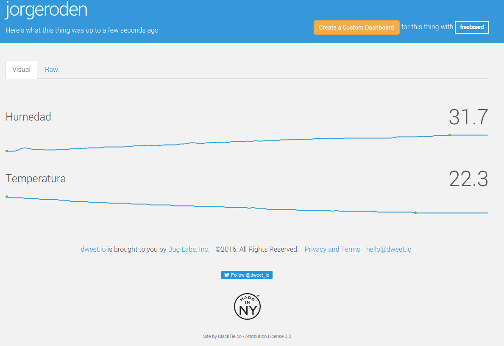
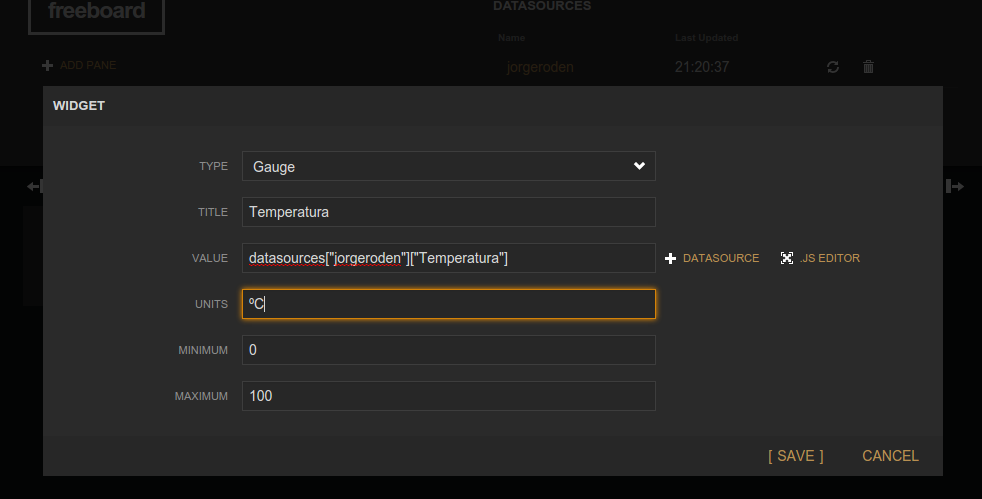
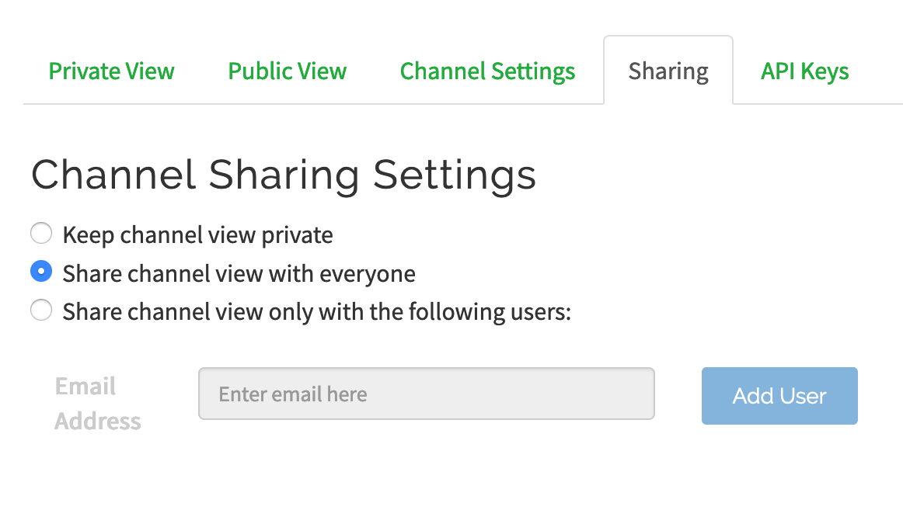
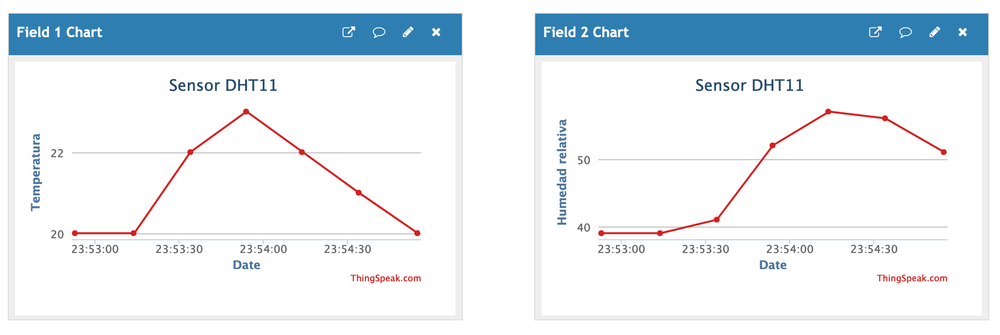

Visualización de datos en la nube. Internet de las cosas.
Monitorizar los datos de temperatura y humedad obtenidos del sensor DHT11 en la nube.
Utilizaremos Arduino y un PC con Processing y conexión a internet para enviar los datos a la nube. No haremos el uso de WIFI ni de Shields para conectar Arduino a internet, los datos se enviarán al PC a través de la comunicación serie y desde éste a internet mediante un programa en Processing.
Analizaremos dos proveedores de servicios IoT como son dweet.io y thingspeak.com
Dweet.io
Para ello disponemos del portal web dweet.io que nos ofrece un servicio para enviar y representar datos en la nube sin necesidad, ni si quiera, de registrarnos en la plataforma.
Vamos a ver los pasos a seguir:
- Probamos la plataforma introduciendo un dato, para ello en el navegador tecleamos por ejemplo (cambia jorgeroden por tu nombre): http://dweet.io/dweet/for/jorgeroden?temperatura=20
- Abre otra pestaña del navegador o utiliza un móvil para seguir el dato: http://dweet.io/follow/jorgeroden
- Prueba añadiendo otra variable, en este caso la humedad:http://dweet.io/dweet/for/jorgeroden?temperatura=20&humedad=8
Automatizamos el proceso de recogida de datos desde Arduino con un programa en Processing, que enviará datos a través del navegador a dweet.io.
IMPORTANTE: No hay que tener abierto el monitor serie del IDE de Arduino porque ocupa el puerto y, por lo tanto, no deja leer los datos a Processing.
PROGRAMA A CARGAR EN ARDUINO PARA DWEET.IO:
#include "DHT.h" #define DHTPIN 2 #define DHTTYPE DHT11 // DHT 11 DHT dht(DHTPIN, DHTTYPE); void setup() { Serial.begin(9600); dht.begin(); } void loop() { delay(2000); float h = dht.readHumidity(); float t = dht.readTemperature(); if (isnan(h) || isnan(t)) { Serial.println("Fallo al leer el sensor DHT11"); return; } // Únicamente enviar a Processing las variables t y h
Serial.print("Temperatura="); Serial.print(t); Serial.print("&Humedad="); Serial.println(h); }
PROGRAMA A EJECUTAR EN PROCESSING (PC / LAPTOP) PARA DWEET:IO:
import processing.serial.*; //lf es el caracter de retorno de carro, que en ASCII es 10 int lf = 10; // El puerto serie Serial myPort; void setup() { // Lista todos los puertos serie println(Serial.list()); // OJO: Elige el puerto donde tengas conectado Arduino.
// Cambia el "0" de Serial.list()[0] por el orden que
// tu puerto ocupe en la lista (0, 1, 2,...).
// Si no lo tienes claro qué puerto ocupa Arduino mira
// en el IDE Arduino en "Herramientas" mira el puerto que esté seleccionado. //Fíjate que tenemos la velocidad del puerto a la misma que pusimos en Arduino myPort = new Serial(this, Serial.list()[0], 9600); } void draw() { while (myPort.available() > 0) { String lectura = myPort.readStringUntil(lf); if (lectura != null) { println(lectura); //IMPORTANTE! cambia jorgeroden por tu nombre o lo que utilizases anteriormente loadStrings("https://dweet.io/dweet/for/jorgeroden?"+lectura); } } }
REPRESENTACIÓN DE DATOS EN EL NAVEGADOR:
Dweet.io nos ofrecerá los datos de la siguiente manera:

Si queremos algo más vistoso podemos utilizar diferentes servicios de monitorización online.
Freeboard.io
freeboard.io aunque en este caso nos tendremos que registrar en la web. Podemos tener un plan gratuito con 30 días de duración.
Una vez registrados podemos crear paneles indicadores configurados a nuestro gusto para visualizar la información. Primero habrá que añadir como fuente de datos Dweet.io y nuestro nombre utilizado allí (jorgeroden en el ejemplo).
Después creamos un panel indicando que la fuente de datos que queremos utilizar y la variable en cuestión a visualizar.

¡Y este puede ser el resultado!

Thingspeak.com
Thingspeak.com es un proveedor de servicios IoT creado por MathWorks (Matlab) para monitorizar y analizar datos online. Si nos registramos podremos disponer de una cuenta gratuita (con un número limitado de muestras) con la que poder visualizar nuestros datos online.
El primer paso para trabajar con esta plataforma será crearse una cuenta. Para ello necesitaremos un email para verificar la cuenta y elegir una contraseña segura.
Una vez obtenida la cuenta dispondremos de un canal con un identificador único (ID) que podremos configurar para poder subir nuestros datos a internet.
Para configurar el canal deberemos activar el número de campos que vamos a utilizar, uno por medida tal y como se observa en la figura. En nuestro caso vamos a monitorizar los datos de temperatura y humedad que obtendremos de un sensor DHT11 conectado a Arduino.

Otra de las opciones que deberemos activar es la de compartir, para que nuestro canal sea público y los datos accesibles desde cualquier dispositivo.

Por último, en la opción API Keys, tendremos las claves para poder enviar datos al servidor de Thingspeak. Se trata de una cadena alfanumérica que deberemos utilizar en nuestro programa de Processing para enviar las medidas al canal.
Finalmente tendremos el canal configurado y preparado para recibir nuestros datos desde Arduino.
PROGRAMA A CARGAR EN ARDUINO PARA THINGSPEAK.COM :
#include "DHT.h" #define DHTPIN 2 #define DHTTYPE DHT11 // DHT 11 DHT dht(DHTPIN, DHTTYPE); void setup() { Serial.begin(9600); dht.begin(); } void loop() { int h = dht.readHumidity(); int t = dht.readTemperature(); if (isnan(h) || isnan(t)) { Serial.println("Fallo al leer el sensor DHT11"); return; } // enviar las variables h y t Serial.print(h); Serial.println(t); delay(10000); //5 segundos de retardo }
PROGRAMA A EJECUTAR EN PROCESSING PARA THINGSPEAK.COM :
import processing.serial.*; //lf es el caracter de retorno de carro, que en ASCII es 10 int lf = 10; // El puerto serie Serial myPort; void setup() { // Lista todos los puertos serie println(Serial.list()); // OJO: Elige el puerto donde tengas conectado Arduino. // Cambia el "0" de Serial.list()[0] por el orden que // tu puerto ocupe en la lista (0, 1, 2,...). // Si no lo tienes claro qué puerto ocupa Arduino mira // en el IDE Arduino en "Herramientas" mira el puerto que esté seleccionado. // Fíjate que la velocidad del puerto es la misma que pusimos en Arduino myPort = new Serial(this, Serial.list()[1], 9600); } void draw() { while (myPort.available() > 0) { String data = myPort.readStringUntil(lf); if (data != null) { String data1 = data.substring(0,2); String data2 = data.substring(2,4); int tem = int(data2); int hum = int(data1); println(hum); println(tem); //IMPORTANTE! cambia api_key por la de tu canal loadStrings("https://api.thingspeak.com/update?api_key=poner-aqui-write-api-key&field2=" + hum + "&field1=" + tem); } } } //}
Finalmente podremos visualizar los datos en el navegador de internet poniendo la URL de nuestro canal:
https://thingspeak.com/channels/-poner-aqui-el-ID-del-canal
También existe una app para dispositivos móviles con Android o IOS (ver Google Play o App Store) para obtener gráficas para visualización de datos.
